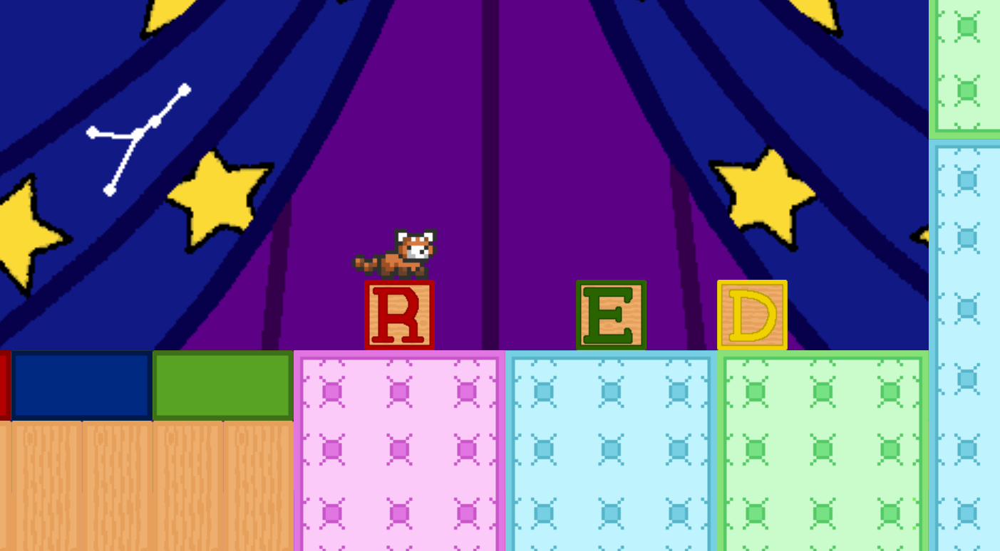
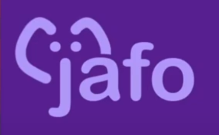
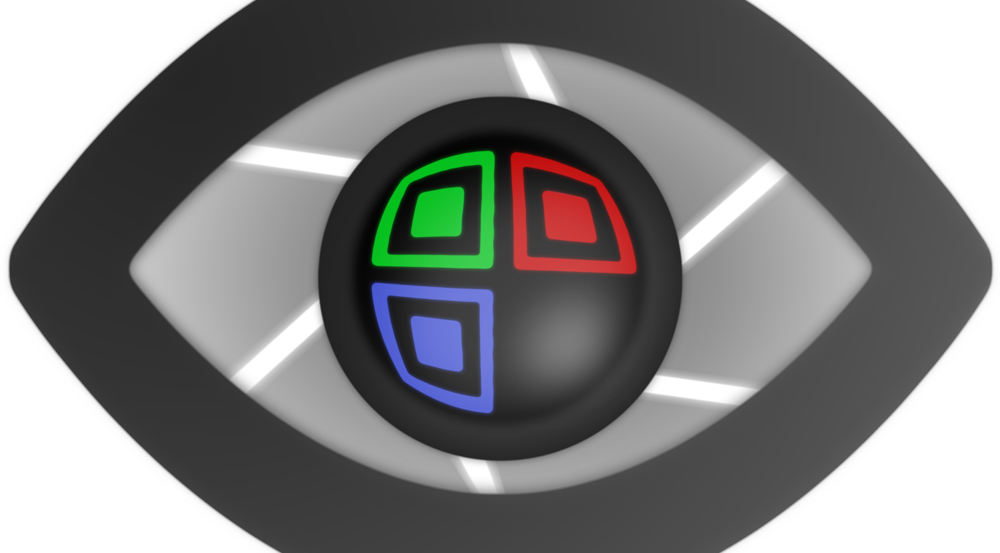

Mother, Wake Up is a psycological game about a helping your listless mother recover after the death of your brother. However, the help comes at a cost...
Do Not Disturb is a puzzle platformer where you play as a stuffed animal, in the imagination of a toddler. Spell his name with letter blocks to complete the level!
Jafo is a file organizing tool where you can automatically sort items into folders or do it manually.
Public Eye is a lost-and-found website that uses printed or 3D printed QR codes to notify owners of lost objects when they have been found.